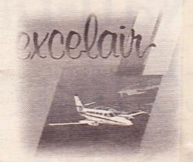
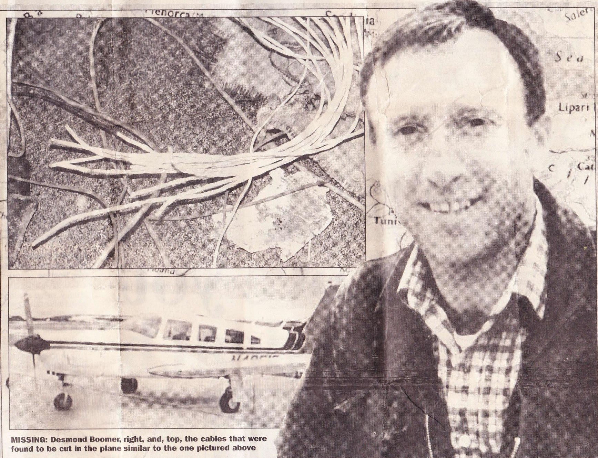

Article by Don Mullan, Ireland on Sunday, Dec 3, 2000
DESMOND BOOMER has a wife and five children who live in Co. Down. He worked in the Libyan oil fields as an engineer for a company based in Britain.
Because of international sanctions imposed against Libya by the UN in 1992 after the Lockerbie bombing, foreign workers were forced to fly to a neighbouring country and travel onwards to Libya by road.
For Boomer and other workers, the preferred route was an international connection to Malta and a private flight from the island to Djerba Airport in Tunisia. Boomer was en route home to Belfast for his Christmas holidays when he disappeared. There are three possibilities concerning the disappearance.
The first and one that cannot be easily dismissed is that Desmond Boomer and his fellow pasengenieers were in the wrong place at the wrong time when Islamic fundamentalists arrived to exact revenge on their pilot, Carmel Bartolo, a marked man. Bartolo was the owner of a small private airline called Excelair.
On November 5, 1995 precisely one month before Boomers mysterious disappearance a local Maltese newspaper Kull Hadd, in an act of gross journalistic irresponsi-
bility implicated Bartolo as an accomplice in the assassination of lslamic Jihad leader. Fathi Shqaqi by members of the Israeli secret service, Mossad, ten days previously in Malta.
The newspaper carried a front-page report that the Shqaqi assassins may have left Malta on a Maltese registered and piloted private plane. Alarmingly the paper printed along-side the story a photograph of an Excelair aircraft, the company owned by Barlolo who was the pilot responsible for flying Desmond Boomer and his fellow passengers to Malta on the night of their disappearance.
On November 9, 1995, The Times of Malta led with the headline, “Shqaqi‘s assassins may have left Malta on private plane”. The article stated that the Maltese police had received information from Europol detailing how the assassins left the island. For security reasons no further details were given but The Times article continued: "Other sources said the police were working on the theory that the men left the island on board a private plane hired from a local company and flown by a Maltese pilot."
The second possibility is that Desmind Boomer along with his fellow travellers, was abducted by Islamic fundamentalists and may still be alive, despite the the fact that no demands of ransom were ever made by way of
money or political bartering. While it is understandable the families of the disappeared would wish to maintain a glimmer of hope, this is the least likely of the three possibilities.
The third possibility is that their flight, 9H-ABU, a light single-engined Piper Lance aircraft had been recklessly flown by Bartolo in to a menacing Mediteranerranean storm, despite mechanical difficulties on a harrowing outboard flight. In this scenario, the aircraft is presumed to have crashed, resulting in the death of the pilot and all five passengers.
THE MALTESE authorities would prefer this to be the conclusion, since it avoids connsequent diplomatic tensions between its three powerful neighbours: Isreal, the Islamic states and the the European Union, Malta is actively aspiring to join the latter bloc. Despire the fact that the largest air and sea search since the World War II was conducted in the immediate aftermath of the disappearance of Flight 9H-ABU, nothing was found and no bodies were ever recovered. The search involved sea and aircraft from five coun- tries: Malta, Italy, Tunisia, France and the United States. The latter used specialised underwater search equipment, concentrating on an area in the Gulf of Gebas where, in this scenario, the plane was suspected of crashing. Absolutely
QUESTIONS REMAIN UNANSWERED
The story of one man’s quest to find his son who mysteriously disappeared five years ago this week

DESMOND BOOMER has a wife and five children who live in Co. Down. He worked in the Libyan oil fields as an engineer for a company based in Britain.
Because of international sanctions imposed against Libya by the UN in 1992 after the Lockerbie bombing, foreign workers were forced to fly to a neighbouring country and travel onwards to Libya by road.
For Boomer and other workers, the preferred route was an international connection to Malta and a private flight from the island to Djerba Airport in Tunisia. Boomer was en route home to Belfast for his Christmas holidays when he disappeared. There are three possibilities concerning the disappearance.
The first and one that cannot be easily dismissed is that Desmond Boomer and his fellow pasengenieers were in the wrong place at the wrong time when Islamic fundamentalists arrived to exact revenge on their pilot, Carmel Bartolo, a marked man. Bartolo was the owner of a small private airline called Excelair.
On November 5, 1995 precisely one month before Boomers mysterious disappearance a local Maltese newspaper Kull Hadd, in an act of gross journalistic irresponsi-
EXCLUSIVE
BY DON MULLAN
bility implicated Bartolo as an accomplice in the assassination of lslamic Jihad leader. Fathi Shqaqi by members of the Israeli secret service, Mossad, ten days previously in Malta.
The newspaper carried a front-page report that the Shqaqi assassins may have left Malta on a Maltese registered and piloted private plane. Alarmingly the paper printed along-side the story a photograph of an Excelair aircraft, the company owned by Barlolo who was the pilot responsible for flying Desmond Boomer and his fellow passengers to Malta on the night of their disappearance.
On November 9, 1995, The Times of Malta led with the headline, “Shqaqi‘s assassins may have left Malta on private plane”. The article stated that the Maltese police had received information from Europol detailing how the assassins left the island. For security reasons no further details were given but The Times article continued: "Other sources said the police were working on the theory that the men left the island on board a private plane hired from a local company and flown by a Maltese pilot."
The second possibility is that Desmind Boomer along with his fellow travellers, was abducted by Islamic fundamentalists and may still be alive, despite the the fact that no demands of ransom were ever made by way of
money or political bartering. While it is understandable the families of the disappeared would wish to maintain a glimmer of hope, this is the least likely of the three possibilities.
The third possibility is that their flight, 9H-ABU, a light single-engined Piper Lance aircraft had been recklessly flown by Bartolo in to a menacing Mediteranerranean storm, despite mechanical difficulties on a harrowing outboard flight. In this scenario, the aircraft is presumed to have crashed, resulting in the death of the pilot and all five passengers.
THE MALTESE authorities would prefer this to be the conclusion, since it avoids connsequent diplomatic tensions between its three powerful neighbours: Isreal, the Islamic states and the the European Union, Malta is actively aspiring to join the latter bloc. Despire the fact that the largest air and sea search since the World War II was conducted in the immediate aftermath of the disappearance of Flight 9H-ABU, nothing was found and no bodies were ever recovered. The search involved sea and aircraft from five coun- tries: Malta, Italy, Tunisia, France and the United States. The latter used specialised underwater search equipment, concentrating on an area in the Gulf of Gebas where, in this scenario, the plane was suspected of crashing. Absolutely
AS FAMILY CONTINUES TO INVESTIGATE MALTESE DISAPPEARANCE

nothing was found.
Speaking exclusively to Ireland on Sunday, Desmonds father. Cormac Boomer, says that in the days that followed he endeavoured to come to terms with what he could only perceive as a tragic air accident.
However, two weeks after the incident. he received a phone call from Geoff Williams. the brother of Michael Williams, a British passenger also missing from the flight, which was to radically chnage his view of the incident. "It set me off on the long search for my son. If I could not find him, I at least wanted to find the truth surrounding his disappearance.”
In a sworn affidavit presented to the Maltese inquiry into the incident, Boomer states that Williams informed him that on December 12, 1995, his nephew, Andrew Williams, Michael‘s son, was in a government building in Malta where he was investigating the circumstances of his father's disappearance. While there, he told his uncle that he met a Dr. Philip Sciberas, who took him into his office, asked
Speaking exclusively to Ireland on Sunday, Desmonds father. Cormac Boomer, says that in the days that followed he endeavoured to come to terms with what he could only perceive as a tragic air accident.
However, two weeks after the incident. he received a phone call from Geoff Williams. the brother of Michael Williams, a British passenger also missing from the flight, which was to radically chnage his view of the incident. "It set me off on the long search for my son. If I could not find him, I at least wanted to find the truth surrounding his disappearance.”
In a sworn affidavit presented to the Maltese inquiry into the incident, Boomer states that Williams informed him that on December 12, 1995, his nephew, Andrew Williams, Michael‘s son, was in a government building in Malta where he was investigating the circumstances of his father's disappearance. While there, he told his uncle that he met a Dr. Philip Sciberas, who took him into his office, asked
his staff to leave and closed the door.
SCIBERAS IS reported to have stated: “We feel you have a right to know your father's plane did not come down in water. It is on land and we know where it is."
Andrew Williams allegedly asked him how he knew that and Boomers aifidavit states that Sciberas replied: "Our surveillance system monitored its distress beacon for seven hours after its reported disappearance."
Williams allegedly then asked Sciberas if the plane was in Tunisia. Sciberas is said to have replied: "No." Williams then asked: "Is it in Libya?".
SCIBERAS IS reported to have stated: “We feel you have a right to know your father's plane did not come down in water. It is on land and we know where it is."
Andrew Williams allegedly asked him how he knew that and Boomers aifidavit states that Sciberas replied: "Our surveillance system monitored its distress beacon for seven hours after its reported disappearance."
Williams allegedly then asked Sciberas if the plane was in Tunisia. Sciberas is said to have replied: "No." Williams then asked: "Is it in Libya?".
Sciberas is said to have responded: "It‘s on the ground in Tripoli."
According to Boomer, Sciberas then said to Andrew Williams: "If you repeat this conversation to anyone outside this room, I will deny that I ever made such a statement."
Ireland on Sunday has in its possession a copy of a letter sent by Cormac Boomer to the head of the Irish Department of Foreign Affairs. Sean O hUiginn, dated December 18, 1995, in which he details the above and in which a Dr. Philip Sciberas is named as the author of the above comments. A senior ofiicial at the department, John Lawton, has confirmed that they have
According to Boomer, Sciberas then said to Andrew Williams: "If you repeat this conversation to anyone outside this room, I will deny that I ever made such a statement."
Ireland on Sunday has in its possession a copy of a letter sent by Cormac Boomer to the head of the Irish Department of Foreign Affairs. Sean O hUiginn, dated December 18, 1995, in which he details the above and in which a Dr. Philip Sciberas is named as the author of the above comments. A senior ofiicial at the department, John Lawton, has confirmed that they have
the letter on file, a copy of which they passed on to their London embassy on December 19, 1995.
A person with the name of Dr. Philip Sciberas was appointed chairman of the Maltese board of inquiry into the incident in January 1996. Dr Sciberras has since threatened legal action against Cormac Boomer and Geotf Williams, denying that he is the person who spoke with Andrew Williams.
In pursuit of the truth surrounding his son's disappearance, Boomer attended, at his own expense, ten sitting's of the board of inquiry in Valletta, chaired by Dr. Philip Sciberas.
A person with the name of Dr. Philip Sciberas was appointed chairman of the Maltese board of inquiry into the incident in January 1996. Dr Sciberras has since threatened legal action against Cormac Boomer and Geotf Williams, denying that he is the person who spoke with Andrew Williams.
In pursuit of the truth surrounding his son's disappearance, Boomer attended, at his own expense, ten sitting's of the board of inquiry in Valletta, chaired by Dr. Philip Sciberas.
HE SAYS that in the course of the inquiry: "I have found it necessary to ques tion much of the evidence presented."
He sites the example of wreckage allegedly discovered by unidentified Tunisian fishermen on September 20, 1996, at a location whose coordinates were never given to facilitate further investigation.
"The Wreckage mysteriously surfaced in the nets of a Tunisian trawler", Boomer, an engineer by profession, told Ireland on Sunday, "It included the wallet and keys of the pilot. I have examined and photographed these items and it is obvious they do not show any sign of the deterioration and corrosion one would expect to find on components submerged in salt water for ten months. It is also claimed the plane crashed into the sea from a height of 9000-feet. Strange therefore, that the cables and looms attached to these components do not show the signs of stress one would expect from an impact of such force. The Maltese
He sites the example of wreckage allegedly discovered by unidentified Tunisian fishermen on September 20, 1996, at a location whose coordinates were never given to facilitate further investigation.
"The Wreckage mysteriously surfaced in the nets of a Tunisian trawler", Boomer, an engineer by profession, told Ireland on Sunday, "It included the wallet and keys of the pilot. I have examined and photographed these items and it is obvious they do not show any sign of the deterioration and corrosion one would expect to find on components submerged in salt water for ten months. It is also claimed the plane crashed into the sea from a height of 9000-feet. Strange therefore, that the cables and looms attached to these components do not show the signs of stress one would expect from an impact of such force. The Maltese
authorities, moreover, have failed to send the debris for expert forensic analysis to a specialised laboratory.
Cormac Boomer informed Ireland on Sunday that there have been highs and lows in his ongoing search. One of the high points Boomer says, was his meeting with a member of the Malta armed forces who frankly stated: "My government knows that plane did not go down in the water."
Don Mullan is the author of the best selling book, Eyewitness Bloody Sunday, which played a crucial role in the decision by the British government to reopen the Bloody Sunday Inquiry. His recent book, The Dublin and Monaghan Bombings, went to No.2 in the Irish non-fiction best-sellers list, In January 2001, Mullan will travel with TV‘s 20/20 current affairs programme, to investigate the disappearance of Desmond Boomer and Flight 9H-ABU.
Cormac Boomer informed Ireland on Sunday that there have been highs and lows in his ongoing search. One of the high points Boomer says, was his meeting with a member of the Malta armed forces who frankly stated: "My government knows that plane did not go down in the water."
Don Mullan is the author of the best selling book, Eyewitness Bloody Sunday, which played a crucial role in the decision by the British government to reopen the Bloody Sunday Inquiry. His recent book, The Dublin and Monaghan Bombings, went to No.2 in the Irish non-fiction best-sellers list, In January 2001, Mullan will travel with TV‘s 20/20 current affairs programme, to investigate the disappearance of Desmond Boomer and Flight 9H-ABU.